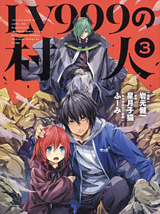
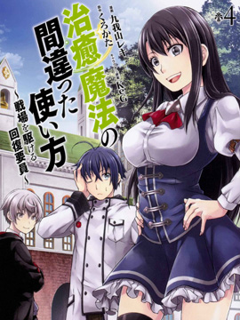
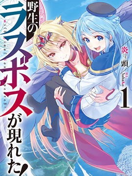

-
 OVERLORD
OVERLORD
一款席捲遊戲界的網路遊戲「YGGDRASIL」，有一天突然毫無預警地停止一切服務——原本應該是如此。但是不知為何它卻成了一款即使過了結束時間，玩家角色依然不會登出的遊戲。NPC開始擁有自己的思想。現實世界當中一名喜歡電玩的普通青年，似乎和整個公會一起穿越到異世界，變成擁有骷髏外表的最強魔法師「飛鼠」。他率領的公會「安茲．烏爾．恭」將展開前所未有的奇幻傳說！
-

LV999的村民
LV999的村民漫画 ，村民=最弱？村民=无能？不对，这个村民，最强无敌！
-

治愈魔法的错误使用方法
平凡的高中生兔里於返家途中巧遇学生会长铃音及同班同学一树，不过这时三人却被突然出现的魔法阵吞噬，并转移至异世界去了。 为了拯救王国免於魔王军的侵袭，三人以『勇者』的身份被召唤到这个世界──可是拥有勇者素质的只有一树与铃音，兔里纯粹是遭受了波及！ 不过自从兔里身上发现了稀有属性的『治愈魔法使』潜能後，情况一下子完全改观了。 自称救命团团长的女性．罗丝强行带走兔里，逼迫他加入救命团。 在那里等著兔里的是凶神恶煞的夥伴，以及利用『治愈魔法的错误使用法』进行训练的地狱生活──。 打破常识的『回复要员』展开一连串的异世界奇幻冒险，充满笑料与武打场面的轻喜剧正式开幕！
-
 致曾为神之众兽
致曾为神之众兽
致曾为神之众兽漫画 ，活着是罪吗？ 揭开男子与少女的，爱与暴力与哀悼之旅的帷幕。
-

野生的最终BOSS出现了
伊兹纳露兹历2800年，被大家所恐惧的名为黑翼之王的女杰，带着称霸世界的壮志，距离征服世界的最终目标近在咫尺。其名为露法兹·玛法尔。她无人能挡，无比迅捷，无比美丽。可是，却有不惧其威名的勇者们将其打败，终结了她的野望。——本来是这样一个游戏设定里的反派角色（♀），不知道为什么我（♂）却附身到了她身上…在被周围越发畏惧，被原部下越发崇拜的情况下，露法茲（我）开始了异世界的旅行。
-
银狐
这里是某镇的一间小小稻荷神社。神社第十五代继承人，木真琴拥有可以看见神狐。。。银太郎的神奇能力。然而这只神狐却是毒舌又没干劲.热心助人的真琴想借用它的力量帮助别人，然而却。。。今天神社又会发生什么故事呢.......